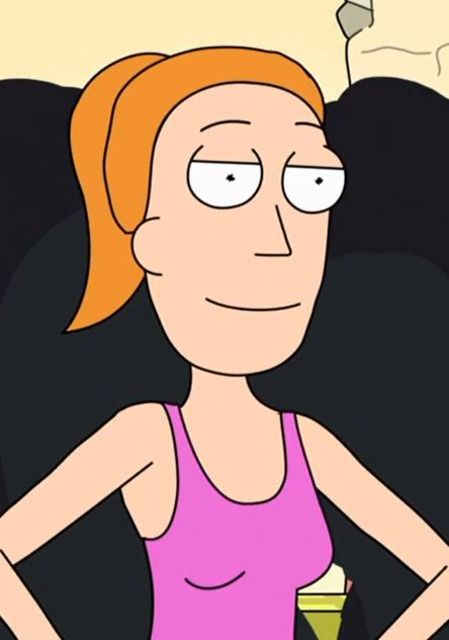

Subir
Rick y Morty es una serie animada de ciencia ficción y comedia para adultos creada por Justin Roiland
y Dan Harmon. Se estrenó en Adult Swim el 2 de diciembre de 2013 y ha ganado gran popularidad por
su humor negro, sus referencias a la cultura pop y su enfoque en la ciencia y la filosofía
La serie sigue las aventuras de Rick Sanchez, un científico genio pero alcohólico y cínico, y su nieto
Morty Smith, un adolescente nervioso y fácilmente influenciable. Juntos viajan a través del multiverso
en misiones peligrosas y absurdas.
Rick arrastra a Morty (y a veces a su familia) en situaciones extremas que van desde visitar realidades
paralelas hasta enfrentarse con criaturas extraterrestres, siempre con un toque de comedia irreverente.
Uno de los aspectos más llamativos de Rick y Morty es su exploración del multiverso, con distintas
versiones de los personajes y dimensiones paralelas, como:
✅ C-137: Dimensión original de Rick y Morty principal.
✅ La Ciudadela de los Ricks: Lugar donde se reúnen miles de versiones de Rick y Morty.
✅ Dimensión Cronenberg: Mundo que Rick y Morty destruyeron con un experimento fallido.
"Total Rickall" (T2E4) – Introduce a Mr. Poopybutthole y parodia las falsas memorias.
üí• "Pickle Rick" (T3E3) ‚Äì Rick se convierte en un pepinillo para evitar terapia familiar.
üí• "The Ricklantis Mixup" (T3E7) ‚Äì Historia de la Ciudadela de los Ricks y la ascensi√≥n de Evil Morty.
üí• "The Vat of Acid Episode" (T4E8) ‚Äì Gan√≥ un Emmy, explora moralidad y consecuencias.
Videos de rick y morty